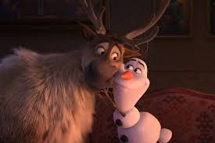
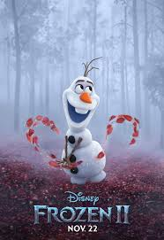

Olaf
 
Olaf’s Frozen Adventure takes place during the first holiday season after Arendelle’s gates were reopened.
It took around a year and a half to make the 21 minute film.
The biggest challenge for the songwriters was the final song. Songwriters Kate Anderson and Elyssa Samsel said John Lasseter jokingly told them that he expected When We’e Together to be as memorable as Silent Night. No pressure, joked Kate Anderson. They also wrote 3 more original songs, and did the voiceover for the cute kittens you see during Olaf’s big song.
Different family traditions are central to Olaf’s Frozen Adventure. During Olaf’s song “That Time of Year” you will see diverse holiday traditions represented. Aside from a Christmas tree, stockings, caroling and Scandinavian celebrations, there is even a Jewish menorah (also called Chanukkiah), and children playing with a dreidel. Pay close attention to all the objects in the sled. You will find several Easter eggs, including Baymax’s fist!
Holiday sweaters inspired a beautiful scene. It required the filmmakers to use hand painted animation and stop motion techniques to get it right. The result was worth all the extra hours!
He's Olaf and he likes warm hugs. Sprung from Elsa's magical powers, Olaf is by far the friendliest snowman to walk the mountains above Arendelle. His innocence, outgoing personality, and uncanny ability to disassemble himself at good and not-so-good times lead to some awkward, albeit laughable moments. He may also have the world's most impossible dream, but what he doesn't know won't melt him—or will it?
Link